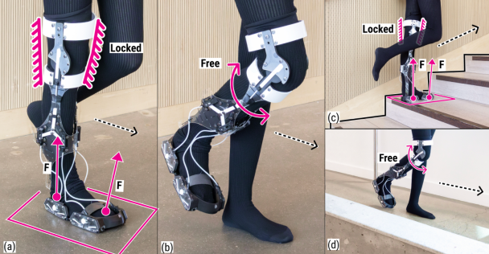
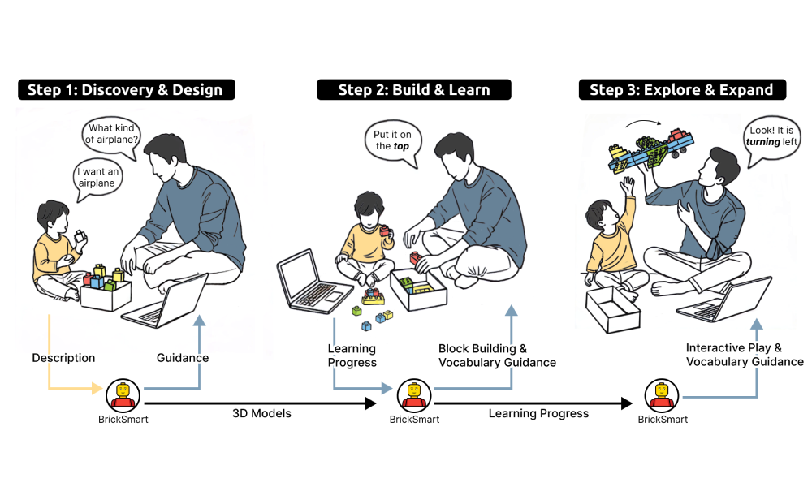
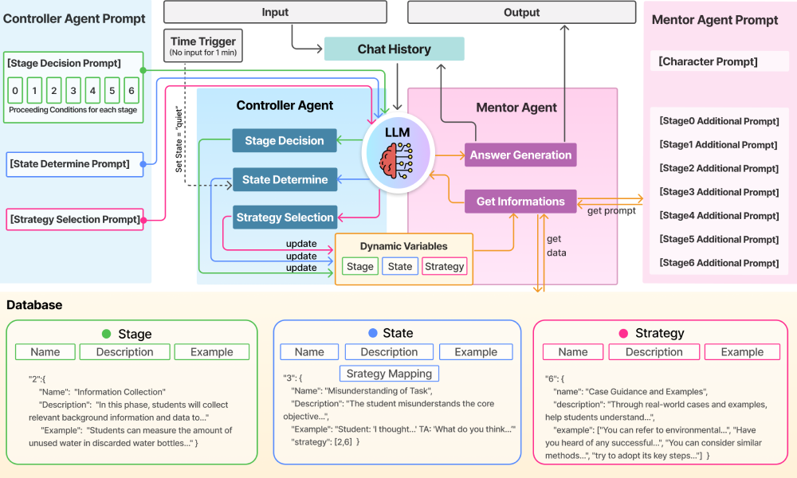
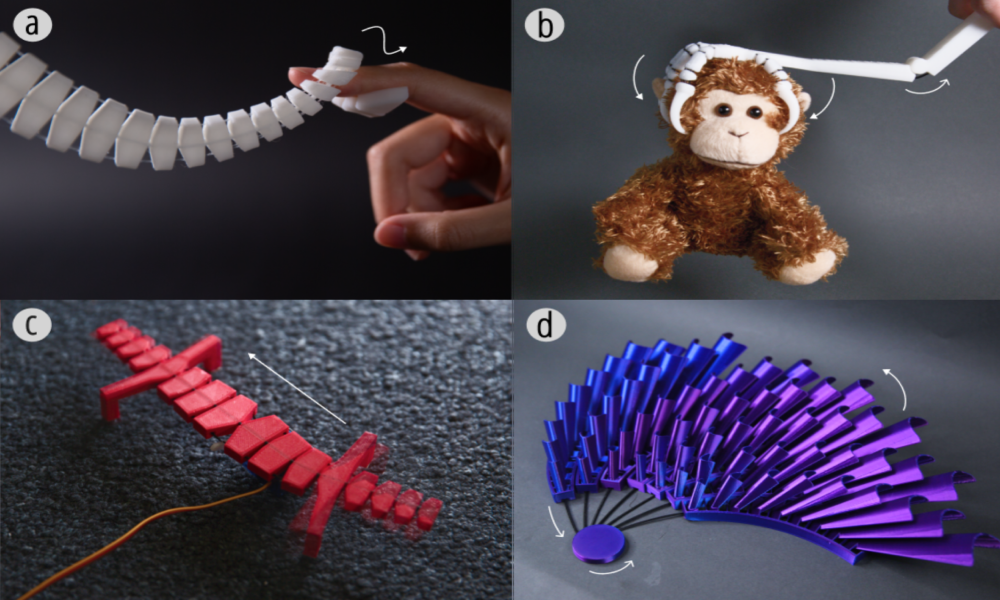
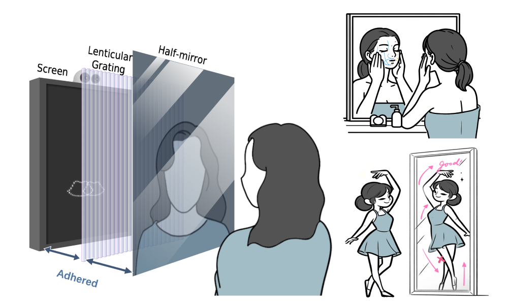
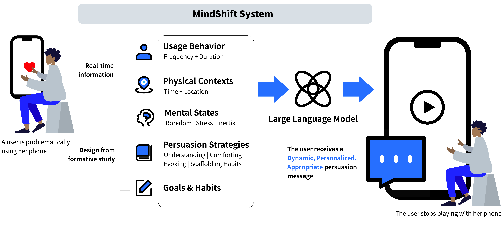
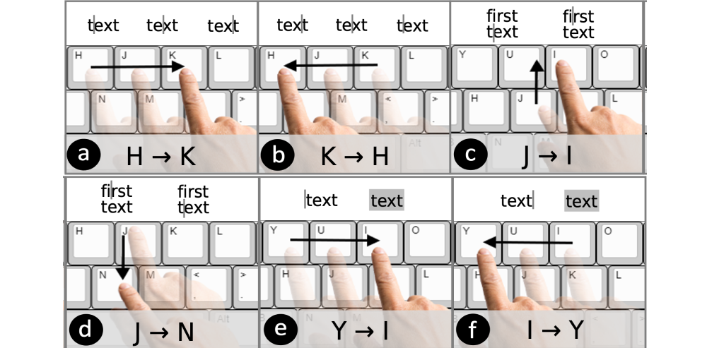
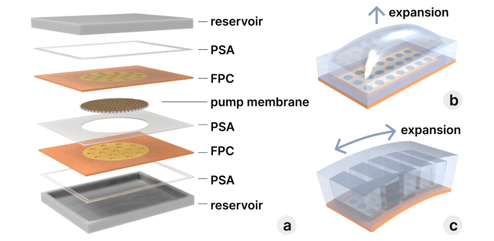
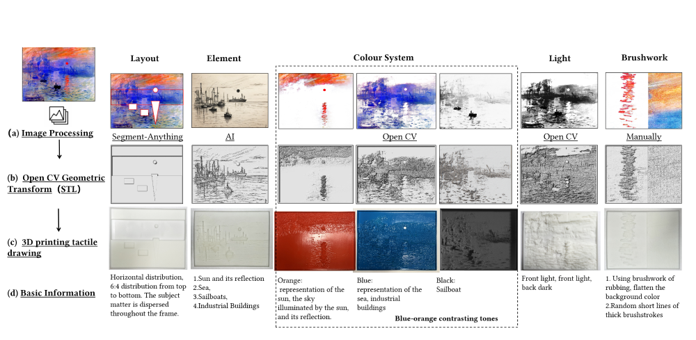

About Me
Hi, I’m a Ph.D. student at interactive structures lab at CMU HCII, advised by Prof. Alexandra Ion.
My current work aim to explore how metamaterial can serve as interfaces that allow AI to assist humans in real-world applications, especially in education scenarios.
Before joining CMU, I got both undergraduate and master’s degrees at Tsinghua University, with a background in Electrical Engineering and Computer Science (EECS), Mechanical Engineering, and Product Design.
View my CV (updated: 06/2026).
Publications

Yuyu Lin, Yujia Liu, Emma Kim, Alexandra Ion.
- We designed a fully passive knee exoskeleton that locks during stance and unlocks during swing using underfoot load as the trigger, enabling more natural walking (including stairs/slopes) without electronics.
- The prototype combines load-triggered heel/toe switches with a mechanical AND gate and achieves lightweight, low-cost mobility support (0.95 kg, ~$38) in a sock-like form.

Yujia Liu*, Siyu Zha*, Yuewen Zhang, Yanjin Wang, Yangming Zhang, Qi Xin, Lunyiu Nie, Chao Zhang, Yingqing Xu.
- We designed an AI Agent for children’s spatial language learning in family block play, using LLMs and Gen-AI to generate personalized block play instructions for creativity and eco-friendly reuse of bricks.
- Conducted a lab experiment with 24 parent-child pairs (children aged 6-8), demonstrating the system’s effectiveness in enhancing spatial language skills.

Mentigo: An Intelligent Agent for Mentoring Students in the Creative Problem Solving Process
Siyu Zha*, Yujia Liu*, Chengbo Zheng, Jiaqi Xu, Fuze Yu, Jiangtao Gong, Yingqing Xu.
- We developed Mentigo, an interactive agent using LLMs to mentor middle school students through the creative problem-solving (CPS) process, with dataset of real classroom interactions and an agentic workflow.
- Tested effectiveness through a comparative experiment with 12 students and feedback from 5 expert teachers, showing significant improvements in student engagement and creative outcomes.

Xstrings: 3D printing cable-driven mechanism for actuation, deformation, and manipulation
Jiaji Li, Shuyue Feng, Maxine Alexandra Perroni-Scharf, Yujia Liu, Emily Guan, Guanyun Wang, Stefanie Mueller.
- We developed Xstrings, a method for 3D printing cable-driven mechanisms in a single process, enabling four types of interactions: bend, twist, coil, and compress, activated by applying force to the cables.
- Investigated the impact of various printing parameters on maximum tensile strain and the repeatability of interactions without cable failure.

3D-Mirrorcle: Bridging the Virtual and Real through Depth Alignment in Smart Mirror Systems
Yujia Liu, Qi Xin, Chenzhuo Xiang, Yu Zhang, Lunyiu Nie, Xuhai Xu, Yingqing Xu.
- We developed 3DMirrorcle, a system addressing depth mismatch in AR smart mirrors using lenticular grating for a 3D display and algorithms for mirror reflection alignment and lenticular grating segmentation to align AR content with users’ reflections.
- Conducted user studies across various tasks and scenarios, demonstrating superior performance in user experience compared to existing solutions.

Ruolan Wu, Chun Yu, Xiaole Pan, Yujia Liu, Ningning Zhang, Yue Fu, Yuhan Wang, Zhi Zheng, Li Chen, Qi-aolei Jiang, Xuhai Xu, Yuanchun Shi.
- We developed MindShift, a mobile app that uses LLMs to create dynamic, personalized content aimed at reducing problematic smartphone use, adapting to user context and mental states.
- Wizard-of-Oz and interview studies were conducted to identify key mental states, and the system was validated in a 5-week field trial with 25 participants, showing significant improvements in smartphone usage.

KeyFlow: Acoustic Motion Sensing for Cursor Control on Any Keyboard
Yujia Liu*, Qihang Shan*, Zhihao Yao, Qiuyu Lu.
- We developed KeyFlow, a system that integrates mouse functionality into keyboards using machine learning, enabling users to control the cursor by gliding their fingers across the surface without pressing keys.
- Our research shows that KeyFlow reduces hand movement by 78.3%, significantly enhancing typing efficiency.

FlexEOP: Flexible Shape-changing Actuator using Embedded Electroosmotic Pumps
Tianyu Yu, Yang Liu, Yujia Liu, Qiuyu Lu, Teng Han, Haipeng Mi.
- We developed FlexEOP, a method for creating fully flexible electroosmotic pumps, enabling adaptable, self-contained shape-changing actuators.
- FlexEOP’s versatility is demonstrated in applications such as flexible displays, panels, curved surfaces, and soft robotic fibers.

More Than Shapes: Exploring the Tactile Parameters of Art Appreciation for the Visually Impaired
MingYu Cui, Chao Yuan, Yujia Liu, Yingying Zheng.
- We enhanced art education for the visually impaired by focusing on Impressionist paintings through workshops.
- Experts translated key painting elements (layout, content, color, lighting, brushwork) into tactile forms, using clay modeling to help participants experience, analyze, and create art, enriching their engagement.
Projects

Automated Video Editing with Semantic Analysis and Aesthetic Evaluation

Adaptive Music and Lighting Systems for Emotional Well-being

Design of Tactile Vibration Experience for Smartphones

User's Color Preferences of Pictures Across Diverse Displays

Ferrofluid Speaker Design Based on Emotion-Mapped Musical Elements
Educations
- 2025.08 – Now, Carnegie Mellon University, Ph.D. in Computer Science.
- 2022.09 – 2025.07, Tsinghua University, M.A. in Information Art and Design.
- 2017.08 – 2022.07, Tsinghua University, B.Eng. in Automation Engineering & B.A. in Industrial Design.
Internships
- 2021.08 – 2025.06, Research Assistant @ Future Lab, Tsinghua University.
- 2024.06 – 2024.11, Visiting Student @ HCI Engineering Group, CSAIL, MIT.
- 2022.10 – 2023.06, Research Assistant @ Pervasive Interaction Laboratory, Tsinghua University.
- 2021.07 – 2021.10, Product Manager Intern @ Tencent, ID/UX Design Group, Cyberverse Product Line.
- 2020.06 – 2020.08, Algorithm Engineer Intern @ Beijing Ewaybot Technology, Robot Navigation Group.
Hobbies
In my spare time, I enjoy practicing yoga, zazen meditation, photography, and recently got into squash.
I’m also a vlogger & content creator on RedNote with ~110k subscribers.